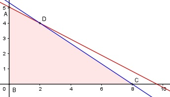

Aufgabe 71 An Drehbank 1 und Drehbank 2 werden Werkstücke W und U bearbeitet. Drehbank 1 braucht für W 2,5 h für U 4,75 h. Drehbank 2 braucht für W 3 h für U 4,5 h. Wie viel W und U können in 24 h hergestellt werden? x = Anzahl W y = Anzahl U Bedingungen: 1. x > 0 x ∈ ℕ 2. y > 0 y ∈ ℕ 3. 2,5x + 4,75y ≤ 24 4. 3x + 4,5y ≤ 24

Die Eckpunkte A, B, C und D bilden das Planungs- gebiet, das alle Ungleichungen erfüllt. Eckpunkt A: Randgerade 1. geschnitten mit Randgerade 3. 0 + 4,75y = 24 :4,75 1 y = 5---- 19 1 A(0|5----) 19 Eckpunkt B: Randgerade 1. geschnitten mit Randgerade 2. B(0|0) Eckpunkt C: Randgerade 2. geschnitten mit Randgerade 4. 3x + 0 = 24 |:3 x = 8 C(8|0) Eckpunkt D: Randgerade 3. geschnitten mit Randgerade 4. 2,5x + 4,75y = 24 (1) 3x + 4,5y = 24 (2) 3x + 4,5y = 2,5x + 4,75y |-2,5x - 4,5y 0,5x = 0,25y |:0,5 x = 0,5y Eingesetzt in (1) 2,5 * 0,5y + 4,75y = 24 6y = 24 |:6 y = 4 x = 0,5 * 4 = 2 D(2|4) Es werden auf Drehbank 1 2 W und 4 U genauso wie auf Drehbank 2 hergestellt. -->Insgesamt sind es 4 W und 8 U in 24 h.